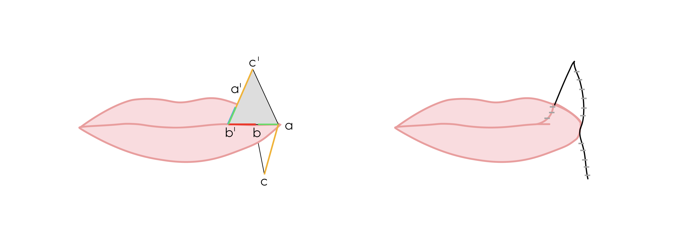

Pre-Operative Considerations
- Identify if the patient has undergone any previous surgery involving the external carotid system, facial artery, or previous lip procedures which may have altered the flap blood supply
- Smoking cessation should be encouraged 